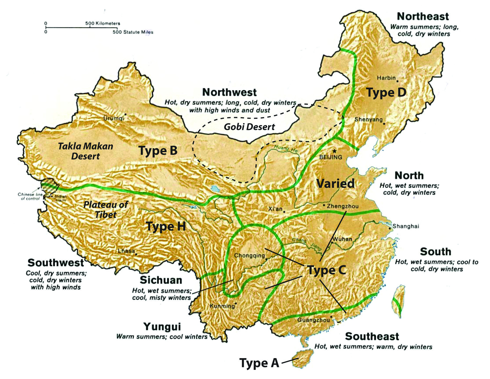
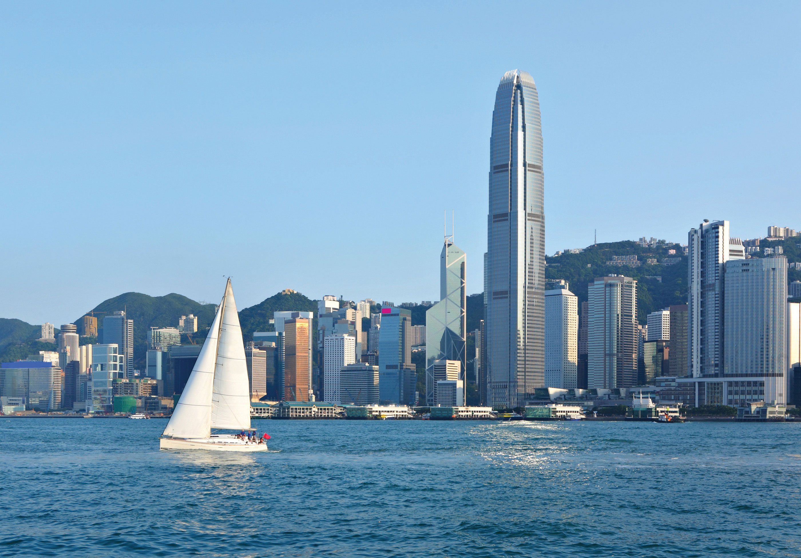
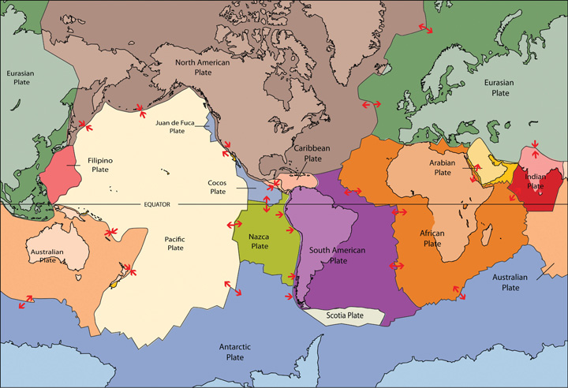
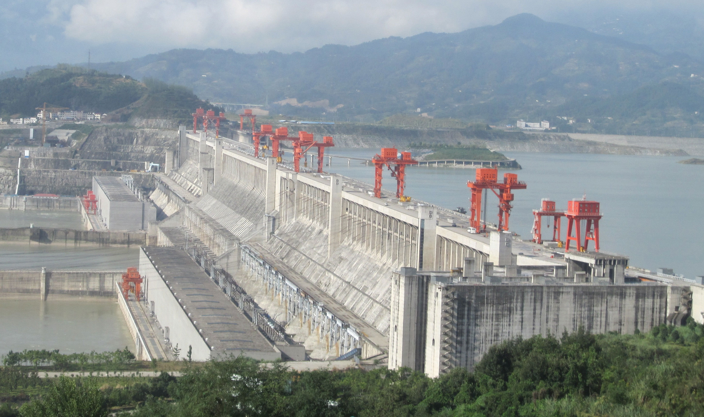
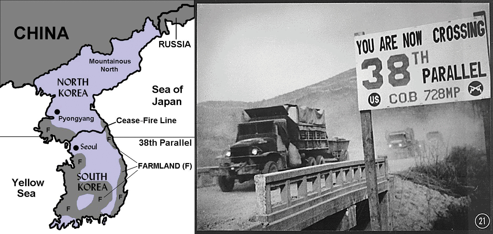

At a Glance
At a Glance
Learning Outcomes
- Understand: Describe how the Ring of Fire shapes the hazard geography of Japan.
- Analyze: Examine the rise of the Asian Tigers and China's SEZs.
- Explain: Describe the geopolitical strategy of the Belt and Road Initiative.
- Evaluate: Assess the demographic crisis of aging populations in Japan and China.
- Apply: Apply geographic concepts to understand the Taiwan, Hong Kong, and DMZ conflicts.
Key Terms
Asian Tigers, Hukou System, Special Economic Zone (SEZ), Ring of Fire, State Capitalism, Tsunami, DMZ (Demilitarized Zone), Belt and Road Initiative, Confucianism.
Stop & Check
Reveal Answer
Common Misconception
Myth: "Chinese" is one spoken language.
Fact: While Mandarin is the official language, there are hundreds of distinct dialects (like Cantonese, Wu, Min) that are mutually unintelligible. The written character system is what unifies the language across the region.
Regional Snapshot: The Eastern Realm
East Asia is a region of superpowers. It contains the world's second and third largest economies (China and Japan) and some of its most ancient continuous civilizations. The geography ranges from the high Tibetan Plateau to the crowded archipelagos of Japan, all linked by the shared cultural thread of Confucianism. This region has undergone the most dramatic economic transformation in modern history, lifting hundreds of millions out of poverty within a single generation while simultaneously generating new geopolitical tensions that shape global affairs.

Interactive Map: East Asia
Explore the diverse landscapes of the region. Zoom in to see the density of the Pearl River Delta megalopolis and the strategic location of the Taiwan Strait.
Toggle between Physical terrain and Political boundaries. Notice how Japan is an archipelago (chain of islands) situated directly on a tectonic plate boundary.
Physical Geography: Rivers, Rings, and Extremes
East Asia's physical geography is defined by dramatic contrasts: the highest plateau on Earth sits alongside some of the world's most densely populated coastal plains. Two massive forces shape this landscape: the great river systems that nurtured Chinese civilization and the tectonic instability of the Pacific Rim that makes Japan one of the most earthquake-prone nations on the planet.
The Pacific Ring of Fire
The eastern edge of East Asia lies along the Pacific Ring of Fire, a horseshoe-shaped zone of intense seismic and volcanic activity encircling the Pacific Ocean. Japan sits at the convergence of four tectonic plates (the Pacific, Philippine, Eurasian, and North American plates), making it one of the most tectonically active places on Earth. The country experiences approximately 1,500 earthquakes per year that are strong enough to be felt. The devastating 2011 Tohoku earthquake (magnitude 9.0) generated a tsunami that killed nearly 20,000 people and triggered the Fukushima nuclear disaster, demonstrating how physical geography can cascade into technological catastrophe.
Taiwan also sits on the Ring of Fire, and the Korean Peninsula, while less active, is bordered by volcanic features including Mount Paektu on the China-North Korea border, a historically explosive stratovolcano that last erupted in 1903. Japan alone has over 100 active volcanoes, and the nation has developed some of the world's most sophisticated earthquake early warning systems in response to this persistent hazard.


Major River Systems: The Lifelines of China
China's two great rivers have sustained civilization for over 5,000 years. The Yellow River (Huang He), often called "China's Sorrow," earned its name from the devastating floods caused by its heavy silt load (loess). The river has changed course dramatically multiple times throughout history, each shift causing catastrophic loss of life. Despite this danger, the fertile loess deposits along its banks enabled the rise of early Chinese dynasties in the North China Plain.
The Yangtze River (Chang Jiang) is Asia's longest river at 6,300 kilometers, flowing from the Tibetan Plateau to the East China Sea near Shanghai. Its basin supports roughly one-third of China's population and produces approximately 40% of the country's GDP. The Three Gorges Dam, completed in 2006, is the world's largest hydroelectric power station, generating 22,500 megawatts. However, the dam displaced over 1.3 million people and submerged thousands of archaeological sites, illustrating the tension between development and preservation that defines modern China's relationship with its geography.
Climate Extremes and the Continental Interior
East Asia experiences enormous climatic variation driven by continentality and the monsoon system. The East Asian Monsoon brings heavy summer rainfall to the coastal regions, sustaining rice agriculture across southern China, Japan, and Korea. In contrast, interior Mongolia and western China are dominated by aridity. The Gobi Desert, one of the world's largest, spans over 1.3 million square kilometers across southern Mongolia and northern China. Dust storms from the Gobi regularly blanket Beijing and even reach Korea and Japan, creating transboundary environmental challenges.
The Tibetan Plateau, averaging over 4,500 meters in elevation, is sometimes called the "Roof of the World" or the "Third Pole" because its glaciers contain the largest freshwater reserves outside the Arctic and Antarctic. These glaciers feed Asia's major river systems, including the Yangtze, Yellow, Mekong, and Brahmaputra, making Tibet's physical geography critical to water security for billions of people across multiple countries.
Island Geographies: Japan, Taiwan, and Korea
Japan's archipelago consists of four main islands (Honshu, Hokkaido, Kyushu, and Shikoku) and nearly 7,000 smaller ones, stretching 3,000 kilometers from subarctic Hokkaido to subtropical Okinawa. This north-south extent gives Japan remarkable climatic diversity, from heavy snowfall in northern Hokkaido (some of the deepest snow on Earth) to coral reefs in the Ryukyu Islands. Japan's mountainous terrain means that approximately 73% of the country is unsuitable for agriculture or habitation, concentrating its 125 million people onto narrow coastal plains and creating some of the highest population densities in the world.
Taiwan, separated from mainland China by the 130-kilometer-wide Taiwan Strait, is a mountainous island with peaks exceeding 3,900 meters. The Korean Peninsula extends southward from the Asian mainland, with the mountainous Taebaek Range running along its eastern coast. The 38th parallel, the boundary between North and South Korea, cuts through relatively flat terrain, making the 250-kilometer-wide Demilitarized Zone (DMZ) an artificial rather than natural boundary.
Environmental Challenges
East Asia faces severe environmental pressures from rapid industrialization. China's air pollution has reached crisis levels in many cities, with particulate matter (PM2.5) concentrations frequently exceeding World Health Organization guidelines by five to ten times. The country has responded with massive investments in renewable energy, becoming the world's largest producer of solar panels and wind turbines. Japan grapples with the long-term consequences of the Fukushima disaster and the challenge of managing nuclear waste on a seismically active archipelago. Across the region, deforestation, desertification (advancing Gobi Desert), and marine pollution threaten ecosystems, while rising sea levels menace the densely populated coastal cities of Shanghai, Tokyo, and Seoul.
Geographic Inquiry
Japan has almost no natural resources (oil, iron, coal) yet became an industrial superpower. How did its geographic location as an island nation force it to develop a unique economic strategy based on trade and human capital? What parallels can be drawn with South Korea and Taiwan?
Human Geography: Tigers, Dragons, and Divided Nations
The human geography of East Asia is shaped by some of the world's oldest civilizations, the most dramatic economic transformations in modern history, and unresolved geopolitical conflicts that carry the risk of global confrontation. Understanding this region requires examining how ancient cultural systems interact with modern economic forces and political divisions.
Ancient Civilizations and Cultural Hearths
East Asia is one of the world's great independent cultural hearths. Chinese civilization emerged along the Yellow River over 5,000 years ago, developing key innovations including paper, printing, gunpowder, and the compass. The philosophical traditions of Confucianism, which emphasizes social harmony, respect for authority, filial piety, and the value of education, profoundly shaped governance and social organization across China, Korea, Japan, and Vietnam. This shared Confucian heritage helps explain the region's emphasis on education and collective effort, cultural values that contributed to rapid economic development in the twentieth century.
Japan developed its own distinct cultural identity by selectively adopting and adapting Chinese and Korean influences. The Japanese writing system combines Chinese characters (kanji) with two indigenous syllabaries (hiragana and katakana). Korea similarly adapted Chinese writing before developing its own phonetic alphabet, Hangul, in 1443, which linguists consider one of the most scientifically designed writing systems in the world.
Population Geography: From Boom to Bust
East Asia's population geography is defined by extreme concentration and an emerging demographic crisis. China's population of 1.4 billion is heavily concentrated in the eastern third of the country; the Heihe-Tengchong Line, running diagonally from the northeast to the southwest, divides the country into two halves: the eastern half contains 94% of the population on 43% of the land, while the western half contains just 6% of the population on 57% of the territory.
China's One-Child Policy (1980-2015) was the most ambitious government intervention in population geography in history. While it slowed population growth, it created a severely distorted age structure. China's working-age population is now shrinking, and by 2050, over 30% of the population will be over 60. Japan faces an even more acute crisis: its population has been declining since 2008, and its median age of 49 is the highest of any major country. South Korea's fertility rate of 0.72 (2023) is the lowest in the world, well below the replacement rate of 2.1. These demographic trends will reshape the region's economic geography in the coming decades.


The Economic Miracle: From Ruins to Riches
The economic transformation of East Asia is one of the most remarkable stories in modern geography. Japan led the way, rebuilding from the devastation of World War II to become the world's second-largest economy by the 1960s through export-oriented manufacturing, quality control innovations, and government-directed industrial policy. The Asian Tigers (South Korea, Taiwan, Hong Kong, and Singapore) followed a similar path, using their coastal locations, educated populations, and strategic engagement with global trade to achieve rapid industrialization.
China's economic rise, beginning with Deng Xiaoping's reforms in 1978, was even more dramatic. By designating Special Economic Zones (SEZs) in coastal cities like Shenzhen, Zhuhai, and Xiamen, China attracted foreign investment while maintaining political control. Shenzhen's transformation from a small fishing village to a city of 17 million with a GDP exceeding that of many European countries is perhaps the single most dramatic geographic transformation of the modern era. China became the "factory of the world," and its GDP grew from $150 billion in 1978 to over $17 trillion by 2023. The Belt and Road Initiative (BRI), launched in 2013, represents China's effort to reshape global trade geography by investing in infrastructure across Eurasia, Africa, and Latin America.
Geopolitical Tensions: Divided Lands
East Asia contains some of the world's most dangerous geopolitical flashpoints, all rooted in geography and history. The Korean Peninsula has been divided since 1945, with the DMZ serving as one of the most heavily fortified borders on Earth. North Korea's isolation and nuclear weapons program create persistent instability, while South Korea, just 35 miles from the DMZ, has developed into a global economic and cultural power.
The Taiwan Strait represents the most consequential unresolved territorial dispute in the world. Taiwan functions as an independent democracy with its own military, currency, and government, but China considers it a breakaway province. Taiwan's dominance in semiconductor manufacturing (producing over 90% of the world's most advanced chips through TSMC) gives this small island outsized global strategic importance. Any military conflict over Taiwan would disrupt the global technology supply chain and potentially trigger a confrontation between the world's two largest economies.
Territorial disputes in the East China Sea (the Senkaku/Diaoyu Islands, claimed by both Japan and China) and the South China Sea further complicate regional security. These disputes involve control over fishing grounds, potential hydrocarbon reserves, and strategically vital shipping lanes through which approximately one-third of global maritime trade passes.
Globalization and Cultural Influence
East Asia has become a major exporter of soft power and cultural influence. South Korea's Hallyu (Korean Wave) has transformed the country from a cultural importer to a global trendsetter. K-pop groups, Korean dramas, and Korean cuisine have achieved worldwide popularity, generating billions in export revenue and reshaping perceptions of Korea globally. Japan's cultural exports, including anime, manga, video games, and cuisine (sushi is now ubiquitous worldwide), have similarly enhanced its global influence.
China's cultural influence operates differently, combining state-sponsored initiatives (Confucius Institutes, media expansion) with the sheer scale of its consumer market. China's technology companies (Alibaba, Tencent, TikTok/ByteDance, Huawei) have become global forces, creating new digital geographies that challenge Western technological dominance. The region's collective cultural, economic, and technological influence ensures that East Asia will play a central role in shaping the geography of the twenty-first century.
Data Exploration: The East Asian Economic Miracle
East Asia's economic transformation over the past 50 years is one of the most dramatic in human history. The chart below compares GDP per capita (purchasing power parity USD) for East Asian nations alongside Singapore as a reference. Notice how Japan, South Korea, and Taiwan, all resource-poor island or peninsula nations, achieved extraordinary prosperity through trade and manufacturing, while North Korea's isolation demonstrates how political geography can override physical advantages.
Interpretation: Japan and South Korea have GDP per capita comparable to Western Europe despite having almost no natural resources. North Korea, with similar geography and resources to South Korea, has one of the world's lowest GDPs. What does this tell us about the role of political geography (economic systems, trade openness) vs. physical geography in determining prosperity?
Taiwan: The Geopolitics of Semiconductors
Taiwan is a small island, roughly the size of Maryland, with an outsized impact on the world. The Taiwan Semiconductor Manufacturing Company (TSMC) produces over 60% of the world's semiconductors and over 90% of the most advanced chips (those smaller than 7 nanometers). This technological dominance has been called a "Silicon Shield," as it makes Taiwan geographically indispensable to the global economy. Every modern smartphone, computer, automobile, and military weapon system depends on chips manufactured in Taiwan's fabrication plants, most of which are concentrated in the Hsinchu Science Park on the island's western coast.
Taiwan's political status remains the most dangerous flashpoint in US-China relations. The People's Republic of China considers Taiwan a breakaway province that must eventually be reunified with the mainland, by force if necessary. Taiwan functions as an independent democracy with its own elected government, military, and currency, but it is not recognized as a sovereign state by most countries. The United States maintains a policy of "strategic ambiguity," neither formally recognizing Taiwan's independence nor committing to its defense, though it sells Taiwan billions of dollars in military equipment under the Taiwan Relations Act of 1979.
Questions to Consider:
- How does Taiwan's physical geography (a mountainous island 130 kilometers off China's coast, separated by shallow waters) shape both its defense strategy and its vulnerability?
- If TSMC's factories were destroyed in a conflict, what would the global economic consequences be? How does this "Silicon Shield" influence China's strategic calculations?
- Is Taiwan a "functional region" integrated with China's economy, or a distinct political entity? What geographic evidence supports each interpretation?
- How does the concept of "chokepoint geography" apply to the Taiwan Strait, through which an enormous share of global shipping passes?
- Asian Tigers
- South Korea, Taiwan, Hong Kong, and Singapore; four economies that achieved rapid industrialization and high growth rates through export-oriented manufacturing between the 1960s and 1990s.
- Belt and Road Initiative (BRI)
- A massive Chinese infrastructure and investment program launched in 2013 to build trade routes and economic connections across Eurasia, Africa, and Latin America, often described as a modern Silk Road.
- Confucianism
- A philosophical and ethical system originating with Confucius (551-479 BCE) that emphasizes social harmony, filial piety, respect for authority, and the value of education; profoundly influential across East Asia.
- Demilitarized Zone (DMZ)
- A 250-kilometer buffer zone along the 38th parallel separating North and South Korea, established by the 1953 armistice; one of the most heavily fortified borders in the world.
- Hallyu (Korean Wave)
- The global spread of South Korean culture, including K-pop music, Korean dramas, films, fashion, and cuisine, which has become a significant source of soft power and export revenue.
- Heihe-Tengchong Line
- A diagonal line across China showing that 94% of the population lives in the eastern 43% of the territory, illustrating the dramatic geographic divide between populous eastern China and the sparsely inhabited west.
- Hukou System
- China's household registration system that ties social services (education, healthcare, housing subsidies) to a person's registered place of birth, restricting rural-to-urban migration and creating a class divide within cities.
- Loess
- Fine-grained, wind-deposited sediment (silt) that forms highly fertile but easily eroded soil; the Loess Plateau in northern China is the world's largest loess deposit and gives the Yellow River its color.
- One-Child Policy
- China's population control policy (1980-2015) that limited most urban families to one child; it slowed growth but created severe demographic imbalances including a rapidly aging population and gender imbalance.
- Ring of Fire
- A 40,000-kilometer horseshoe-shaped zone of intense seismic and volcanic activity encircling the Pacific Ocean, where approximately 75% of the world's volcanoes and 90% of earthquakes occur.
- Special Economic Zone (SEZ)
- A designated area within China where foreign investment, market-oriented policies, and tax incentives are permitted, contrasting with the centrally planned economy of the rest of the country; Shenzhen was the first and most successful.
- State Capitalism
- An economic system in which the state plays a dominant role in commercial enterprise through direct ownership, subsidies, or regulatory control, while still permitting private market activity; China's economic model.
- Tsunami
- A series of ocean waves generated by large-scale disturbances of the sea floor (earthquakes, volcanic eruptions, landslides); the 2011 Japan tsunami reached wave heights of over 40 meters in some coastal areas.
- Three Gorges Dam
- The world's largest hydroelectric power station, built on the Yangtze River in China; it generates 22,500 megawatts of power but displaced over 1.3 million people and submerged thousands of historical sites.
- The Ring of Fire defines Japan's hazard geography. Japan's position at the convergence of four tectonic plates creates persistent earthquake, tsunami, and volcanic risk, shaping everything from architecture to energy policy.
- China's geography is divided between a densely populated east and a sparsely inhabited west. The Heihe-Tengchong Line reveals that 94% of Chinese live on 43% of the land, concentrated along river valleys and coastal plains.
- Two great rivers sustained Chinese civilization. The Yellow River and Yangtze River provided the agricultural foundation for one of the world's oldest continuous civilizations, and their management remains critical to China's development.
- The Asian Tigers proved that geography is not destiny. Resource-poor island and peninsula nations (Japan, South Korea, Taiwan) became global economic powers through trade-oriented policies, education investment, and strategic geographic positioning along Pacific shipping lanes.
- China's SEZs represent the most dramatic geographic transformation in modern history. Shenzhen's growth from a fishing village to a megacity of 17 million in four decades illustrates how policy can reshape economic geography.
- East Asia faces a demographic crisis of aging and shrinking populations. Japan's declining population, China's distorted age structure from the One-Child Policy, and South Korea's record-low fertility rate will reshape the region's economic geography in coming decades.
- The Taiwan Strait is the world's most consequential geopolitical flashpoint. Taiwan's semiconductor dominance gives it global strategic importance far beyond its small physical size, creating a "Silicon Shield" that shapes great power calculations.
- The Korean Peninsula illustrates how political geography overrides physical geography. North and South Korea share nearly identical physical environments, yet their divergent political systems have produced radically different outcomes in development, prosperity, and quality of life.
- East Asia has become a global cultural exporter. From K-pop and anime to Chinese technology platforms, the region's soft power influence is reshaping global culture and creating new digital geographies of connection.
The South China Sea: Competing Claims in the Pacific
The South China Sea is one of the world's most strategically important waterways, carrying over $3 trillion in trade annually and sitting atop vast oil and gas reserves. China has built artificial islands and military installations on disputed reefs, claiming nearly the entire sea based on the "Nine-Dash Line." Multiple nations dispute these claims. You are attending an ASEAN emergency summit to negotiate a Code of Conduct.
Role A: China
You claim the South China Sea based on the "Nine-Dash Line," citing historical fishing rights going back centuries. Your island-building program is complete. You reject the 2016 international tribunal ruling against your claims and see this as a matter of national sovereignty and territorial integrity.
Role B: Philippines
China's artificial islands are within your Exclusive Economic Zone (EEZ). Your fishermen are being blocked from traditional fishing grounds. You won the 2016 tribunal ruling but China ignores it. You need US support but also depend on Chinese investment and trade.
Role C: Vietnam
You have the longest history of conflict with China and the most to lose. You claim the Paracel and Spratly Islands and have your own island-building program. You want a strong multilateral agreement but must balance your economic ties with China against sovereignty concerns.
Role D: United States (Observer)
You conduct "Freedom of Navigation" operations in the disputed waters. You have mutual defense treaties with the Philippines and Japan. You see China's expansion as a threat to the rules-based international order, but you are not a party to the territorial disputes themselves.
Knowledge Check
Test your understanding of the core concepts covered in this chapter. This quiz consists of multiple-choice questions designed to review key terms, regional patterns, and geographic relationships. Select the best answer for each question to receive immediate feedback.
Loading quiz questions...
Discussion and Reflection Prompts
Reflect on Your Learning
- The "East Asian Miracle": Japan, South Korea, Taiwan, and China all achieved rapid economic development through export-led manufacturing. What geographic factors (location, coastlines, labor supply) enabled this model? Why hasn't it worked the same way in every region?
- One-Child Policy's Legacy: China's one-child policy (1980-2015) dramatically altered its population pyramid. What geographic and economic challenges does an aging, shrinking population create for a country of China's size?
- The Hukou System: China's household registration system ties social services to birthplace, creating barriers to rural-urban migration. How does this geographic control mechanism shape urbanization patterns differently from other countries?
Discuss With Your Peers
- Japan and South Korea are both island/peninsula nations with few natural resources, yet they became global economic powerhouses. How did their geographic position in the Pacific help them leverage trade relationships?
- North Korea is one of the most isolated countries on Earth. How does its mountainous terrain and geographic position between China and South Korea shape its political strategy of self-reliance (Juche)?
- China's Belt and Road Initiative is building infrastructure across Asia, Africa, and Europe. Is this modern economic geography or a new form of geopolitical influence? How does geography determine which countries are most strategically important to China?
Curriculum Standards Alignment
This chapter aligns with the following National and State geography standards.